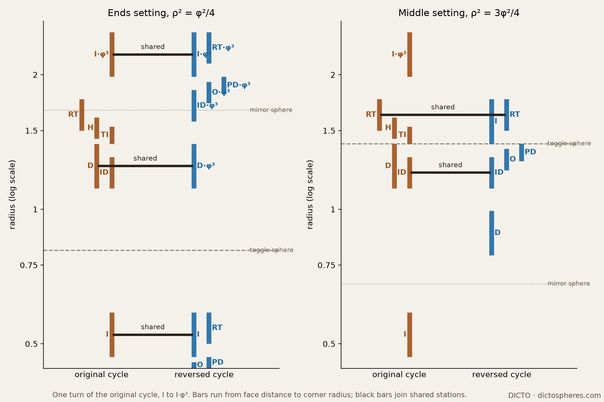
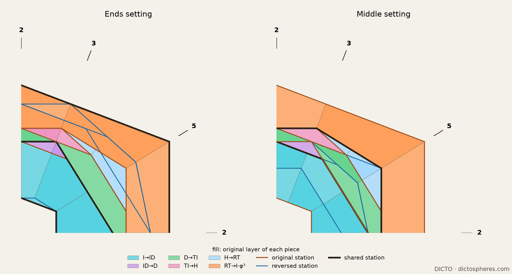
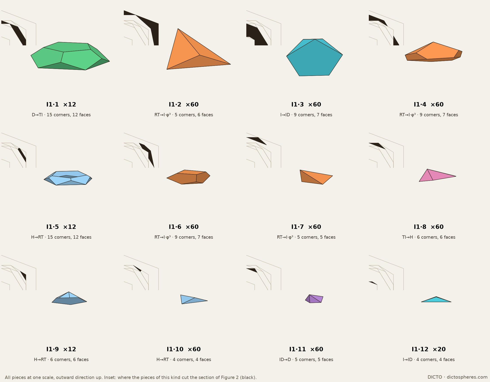
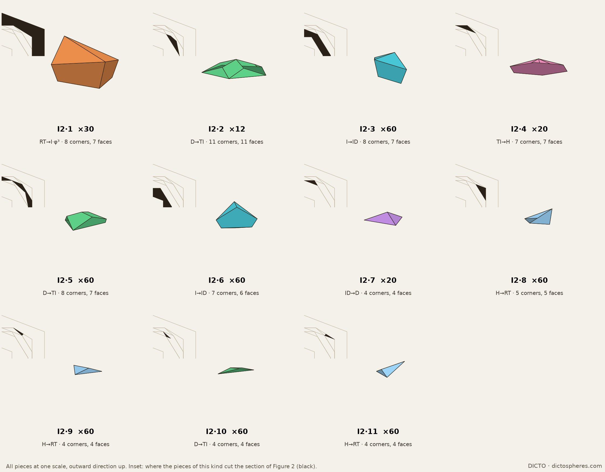

The Spheres of Dharma and their polar reversal sharing one space: the toggle between two exact settings, why they exclude each other, and the interlock, both cycles cut into one solid of convex pieces
The Spheres of Dharma (DICTO DOI: 10.5281/zenodo.23310833) is an exact, endlessly repeating nesting of six icosahedral solids: icosahedron ⊂ icosidodecahedron ⊂ dodecahedron ⊂ truncated icosahedron ⊂ rhombic triacontahedron ⊂ icosahedron φ³ larger, with the DICTO Hecatodihedron (DICTO DOI: 10.5281/zenodo.23360858) as the closed in-between stage of its fourth layer (stage 7 in Capturing the In-betweens, DICTO DOI: 10.5281/zenodo.23345502). Taking that stage as a seventh station and reciprocating every station gives the reversed cycle of Inverted Shells (DICTO DOI: 10.5281/zenodo.23405029): dodecahedron ⊂ icosidodecahedron ⊂ Ogdoecontahedron ⊂ pentakis dodecahedron ⊂ icosahedron ⊂ rhombic triacontahedron ⊂ dodecahedron φ³ larger, the Ogdoecontahedron (DICTO DOI: 10.5281/zenodo.23404688) being the one new solid. DICTO asked whether the two cycles can share one space, and whether together they make one real solid.
Which closed stages count as stations is a choice. The truncated icosahedron → triacontahedron layer has two convex in-between stages: the Hecatodihedron (stage 7, on the main route) and the icosahedron 3·I (the truncated icosahedron with its 12 pentagonal caps restored, reached by skipping the Shields). Neither contains the other (float check), so at most one can be a station. Inverted Shells chose the Hecatodihedron, and that choice produced the Ogdoecontahedron; the six published stations alone reciprocate to classical solids only. We keep the seven stations of Inverted Shells; the line-up with 3·I is left to a separate study.
The sphere of reciprocation is the one free choice. Polarity in a sphere of radius ρ sends radius r to ρ²/r, so in log-radius it is a reflection about log ρ; the cycle's φ³ repeat is a translation. Together they give mirror spheres every φ3/2 in radius: the union of the two cycles reads the same outward and inward, a palindrome in scale, and the polarity swaps the two cycles.

The reversed cycle was cut into convex pieces in Inverted Shells, by cones from the centre over the faces of each layer's inner solid: 154 pieces in one turn. We cut the original cycle the same way, giving 174 pieces in one turn (these are new here, not the Dharma's own 237 pieces). We intersect every piece of one original turn with every piece of the reversed turns that cover it (turns 0 and 1 in the ends setting, −1 and 0 in the middle setting). Every intersection is convex. Every corner was then solved exactly, as the meeting point of three exact planes, after float points lying only on edges were dropped by a rank test on the plane normals. In both settings every original piece is exactly the sum of its parts, and every layer exactly the sum of its interlock pieces, with remainder 0 in ℚ(√5). Kinds are counted twice, by exact volume and by symmetry orbit of the exact corners, and the two counts agree. DICTO names the two sets as one family from the Inverted Shells project: DICTO Interlock set 1 (Dharma-Ends) and DICTO Interlock set 2 (Dharma-Middle). Each piece is named by its set and its number in that set, largest first, followed by its shape: piece I1·1 (12f) is the largest piece of set 1.

Several original layers lie wholly inside one reversed layer, so their pieces pass through unchanged; the cutting happens mainly in the outer layer, where the triacontahedron → I·φ³ roofs are cut by four reversed layers into 240 pieces.
| Kind | Count | Original layer | Reversed layer | Corners | Faces (number × sides) | Volume (exact) |
|---|---|---|---|---|---|---|
| I1·1 12f | 12 | D → TI | D → ID | 15 | 5 × 3, 7 × 5 | -25/24 + 2/3√5 |
| I1·2 TBP | 60 | RT → I·φ³ | PD → I | 5 | 6 × 3 | 145/1368 + 97/2052√5 |
| I1·3 7f | 60 | I → ID | RT → D·φ³ | 9 | 3 × 3, 1 × 4, 3 × 5 | 83/576 − 41/2880√5 |
| I1·4 7f | 60 | RT → I·φ³ | D → ID | 9 | 2 × 3, 3 × 4, 2 × 5 | -11221/5184 + 15629/15552√5 |
| I1·5 12f | 12 | H → RT | D → ID | 15 | 5 × 3, 7 × 5 | 550235/24624 − 245243/24624√5 |
| I1·6 7f | 60 | RT → I·φ³ | ID → O | 9 | 3 × 3, 1 × 4, 3 × 5 | 151655/32832 − 602341/295488√5 |
| I1·7 QPy | 60 | RT → I·φ³ | O → PD | 5 | 4 × 3, 1 × 4 | 41/2592 + 55/7776√5 |
| I1·8 PPy | 60 | TI → H | D → ID | 6 | 5 × 3, 1 × 5 | -11/8 + 5/8√5 |
| I1·9 PPy | 12 | H → RT | ID → O | 6 | 5 × 3, 1 × 5 | -3715/162 + 1663/162√5 |
| I1·10 Tet | 60 | H → RT | D → ID | 4 | 4 × 3 | -93/152 + 21/76√5 |
| I1·11 QPy | 60 | ID → D | RT → D·φ³ | 5 | 4 × 3, 1 × 4 | 1/576 + 1/576√5 |
| I1·12 Tet | 20 | I → ID | I → RT | 4 | 4 × 3 | -11/48 + 5/48√5 |
Table 1. Interlock set 1, the ends setting. Layers: I icosahedron, ID icosidodecahedron, D dodecahedron, TI truncated icosahedron, H Hecatodihedron, RT rhombic triacontahedron, O Ogdoecontahedron, PD pentakis dodecahedron; φ³ the next turn out. Corners and faces from the cleaned float corners; volumes exact. Pieces numbered largest first; shapes: 12f, 11f, 7f and 6f give the number of faces; TBP triangular bipyramid, HPy hexagonal pyramid, PPy pentagonal pyramid, QPy four-sided pyramid, Tet tetrahedron.

At ρ² = 3φ²/4 the reversed cycle is exactly 3 times its ends-setting size, so its pieces are the ends pieces scaled by 3. Here the outer roofs pass through whole: the 30 roofs (RT → I·φ³), the 20 truncated icosahedron → Hecatodihedron pyramids and the 20 icosidodecahedron → dodecahedron tetrahedra lie each inside one reversed piece. The cutting moves to the middle layers: the dodecahedron → truncated icosahedron columns are cut into 132 pieces and the Hecatodihedron → triacontahedron layer into 180.
| Kind | Count | Original layer | Reversed layer | Corners | Faces (number × sides) | Volume (exact) |
|---|---|---|---|---|---|---|
| I2·1 7f | 30 | RT → I·φ³ | RT → D·φ³ | 8 | 2 × 3, 5 × 4 | 371/72 − 47/24√5 |
| I2·2 11f | 12 | D → TI | ID → O | 11 | 5 × 3, 5 × 4, 1 × 5 | 625/10944 + 289/10944√5 |
| I2·3 7f | 60 | I → ID | D → ID | 8 | 2 × 3, 5 × 4 | -1585/576 + 3643/2880√5 |
| I2·4 HPy | 20 | TI → H | I → RT | 7 | 6 × 3, 1 × 6 | -33/8 + 15/8√5 |
| I2·5 7f | 60 | D → TI | PD → I | 8 | 2 × 3, 5 × 4 | -101/456 + 12/95√5 |
| I2·6 6f | 60 | I → ID | RT → D·φ³ | 7 | 3 × 3, 2 × 4, 1 × 5 | 203/72 − 56/45√5 |
| I2·7 Tet | 20 | ID → D | O → PD | 4 | 4 × 3 | 1/192 + 1/192√5 |
| I2·8 QPy | 60 | H → RT | PD → I | 5 | 4 × 3, 1 × 4 | -1/24 + 1/40√5 |
| I2·9 Tet | 60 | H → RT | I → RT | 4 | 4 × 3 | -93/152 + 21/76√5 |
| I2·10 Tet | 60 | D → TI | O → PD | 4 | 4 × 3 | 1/576 + 1/576√5 |
| I2·11 Tet | 60 | H → RT | I → RT | 4 | 4 × 3 | -23/304 + 11/304√5 |
Table 2. Interlock set 2, the middle setting, as Table 1.

Known and credited: polar reciprocation and the reversal of inclusion (convex geometry; Firsching 2015); the common refinement of two convex dissections by pairwise intersection, a standard construction; nested icosahedral shells in clusters and viruses (Takakura et al. 2007; Twarock, Valiunas and Zappa 2015). Not found in our reference library and web searches (16 October 2026; printed catalogues not read): a cycle of nested solids and its polar reversal placed in one space; the two exact toggle settings and the proof that they exclude each other; the exact interlock dissections and their kinds.
In studies/2026-10-16-interlock: chains.py (both chains in one frame), interlock.py (the pairwise intersections, float; arguments for the middle setting), interlock_exact.py (exact corners, sums and kinds → interlock-ends-exact.txt, interlock-middle-exact.txt), interlock_kinds.py (Tables 1 and 2 → interlock-kinds.txt), interlock_kinds_render.py (cleaned corners of one piece per kind) and p4_figures.py (all four figures, from the same data), middle_icosa_3I.py (the reversed icosahedron of the middle setting is exactly 3·I → middle-icosa-3I.txt). Checks: python3 studies/_lib/test_geomcheck.py.